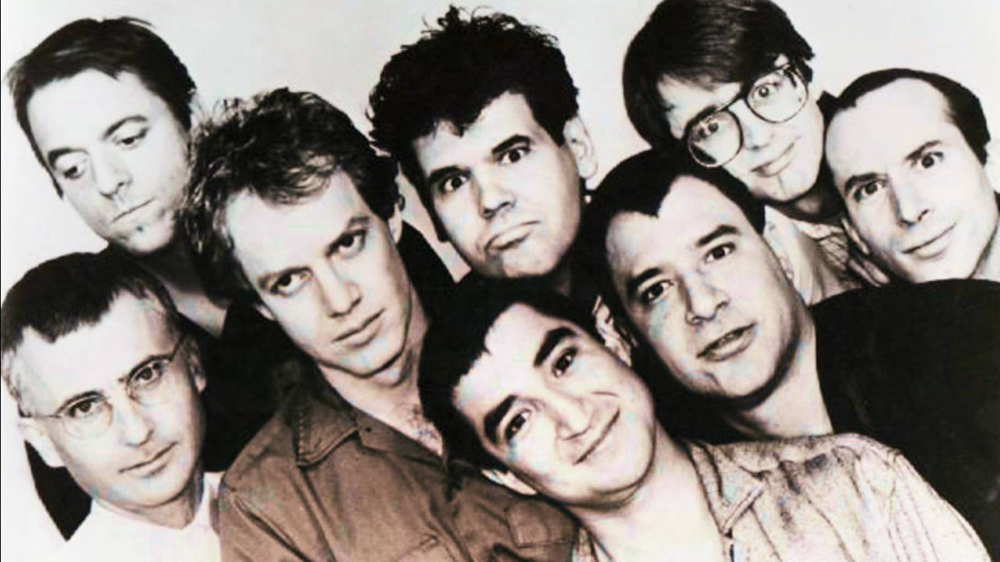

One of the fondest memories I have is from my high school year days, my closest friend Paul in the passenger seat of my mother’s convertible Chrysler LeBaron. We were just out cruising around heading to the arcade. I remember the wind blowing in our hair and the stock radio tuned to KROQ-FM (a local alternative rock station in Orange County, California). I recall "Only a Lad" coming on the radio, simultaneously Paul and I looked over at each other, then back to the radio. Instinctively I turned the radio all the way up. This was our mantra, with its fast pace rhythm and edgy lyrics, it described what we thought we were, misguided youth. The band, Oingo Boingo, an eclectic mix of ska, new wave, pop and original sounds created by the octet headed by Danny Elfman. (Prato, 2017) This would be the music I would find myself drawn to over and over again throughout my life.
The year was 1987 and I remember Paul putting a tape in his cassette player and turning it on. The typical melodic synthesizers and melancholy sounds that were typical for the new wave music of the time were replaced by a gritty and upbeat tone. A mixture of horns, guitar and subtle percussion carried a unique voice through the speakers. I remember hearing the lyric; (Lyric Freak, 2017)
But it was the chorus that caught me…” nothing to fear, but fear itself.” I could totally relate to this, as I was living in the Regan era under the constant threat of the Cold War, mutually assured destruction and hostage crisis that seemed to pop up every week, I could imagine my world ending in a blinding light and nuclear wind. These were my nightmares, but along with it was the reassurance that everything would be all right. Hear was a song that addressed my insecurities, but also told me there was a way beyond them. I was hooked and I had to hear more, I forced Paul to play the entire side, flip it over and play the other…twice! I could not get enough of Oingo Boingo.
Immediately I set out to collect their entire catalog of music, and within weeks I had everything that they had produced. Almost everything got into my head or held a deeper meaning for me and that is when I realized that the music wasn’t just playful lyrics and cool musical compositions, it was a commentary on the culture of the time. Playful jabs at what mainstream thought of as normal, which I found appealed to my inner punk rocker. Songs like “Little Girls” were not talking about some pervert that took interest in younger females but rather how the status of individuals in the entertainment industry could be judged on how hot and young their date was to an awards show or premier event. Again I found I could relate to this. Another example was “Only a Lad” a chilling tale of a young man who steals a car and accidently kills an old lady. On the surface it is a sad story of misspent youth, but under the surface it was describing how society was shifting the blame of criminal acts of juveniles away from them and onto circumstances. It wasn’t his fault it was how he was brought up, his life, surely he wasn’t just a mean little kid.
Over the years, Oingo Boingo would release more albums, some with more playful tunes and softer melody, others with a darker and sober feel. But with each progression it felt like they were playing just for me. I had a therapeutic song for just about every emotion and an anthem in their music for whatever situation I might find myself. If I was feeling down, that the whole world was against me, I could turn on “It Only Makes Me Laugh”, where I would learn that rock bottom can always get worse, but it never lasts too long and you can get through it. Even today I look back and revisit these songs. Each has a meaning and a place in my life and touches me to this day. They have traveled with me to Germany and my early days in the Army. I can remember listening to “Dead Mans Party” before entering into a live minefield to locate and mark explosives, and later dancing with my daughter and son, introducing them to songs like “Home Again” after returning from my third deployment to Afghanistan. Oingo Boingo was there through the good and the bad.
In 1996 Oingo Boingo played their last concert together, ending nearly two decades of music together. Their popularity waned in the wake of the Seattle grunge scene and record sales dropped. Danny Elfman would take his experience from Oingo Boingo and transition into scoring music for movies. His style is easily discernable and his movie credits have allowed him to influence an even greater number of people. (Wikipedia, the free encyclopedia, Oingo Boingo, 2017) Films like Tim Burtons Batman and a Nightmare before Christmas have marked a turning point for him, however Oingo Boingo will always resonate in my soul.
Lyric Freak. Nothing to Fear - Oingo Boingo. 2017. 22 Jan 2017.
www.lyricsfreak.com/o/oingo+boingo/nothing+to+fear_10196903.html
Prato, Greg. Oingo Boingo.em? 2017. Web. 21 Jan 2017.
http://www.allmusic.com/artist/oingo-boingo-mn0000390532/biography
Wikipedia, the Free Encyclopedia. Oingo Boingo. 13 Jan 2017. Web. 22 Jan 2017.